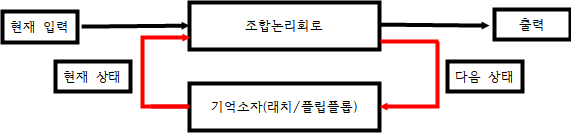

순서논리회로(Sequential Logic Circuit)
o 순서논리회로 (Sequential Logic Circuit)는
출력이 현재 공급되는 입력의 조합에 의해서만 결정되는 조합논리회로와는 달리
순서 논리 회로의 출력은 현재 공급된 입력의 조합과 현재의 출력상태에 의해 결정되는 회로이다.
그래서 현재의 출력상태를 저장할 수 있는 기억소자가 필요한데, 그런 기억소자가 바로 래치와 플립플롭이다.

그리고 이러한 기억소자을 이용해서 카운터, 레지스터 등과 같은 다양한 응용회로를 만들 수 있다.
또한 이러한 회로를 통해서 하드디스크, CD-ROM 등과 같은 기억장치를 만들 수 있다.
이번 장에서 정리할 내용을 간략히 소개해보면 다음과 같다.
- 래치(Latch) - RS래치, D래치
- 플립플롭(Filp-Fiop) - RS-FF, D-FF, JK-FF
- 멀티바이브레이터(Multivibrator) - A-stable, Mono-stable, Bi-stable
- 555타이머
- 카운터(Counter) - 비동기식 카운터, 동기식 카운터, 링 카운터, 존슨 카운터
- 레지스터(Register) - 입출력에 따른 분류: SISO, SIPO, PISO, PIPO
- 자리이동에 따른 분류: Right Shift Register, Left Shift Register
,Bidirectional shfit Register, Universal Shift Register 등
자신이 보고 싶은 내용을 위에 걸어놓은 링크를 눌러서 들어가서 공부하면 된다.